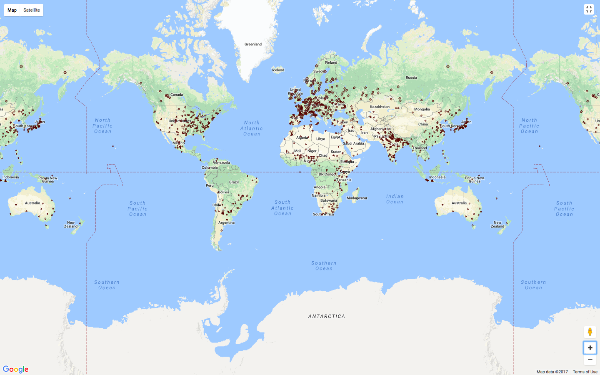
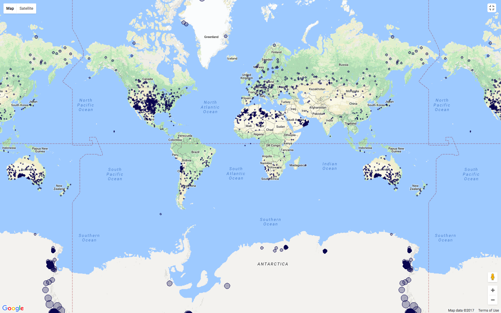

In the graph, the factor that made we found the meteorite's flasks is meteorite's mass and atmosphere. If the meteorites have enough mass, it can penetrate from the atmosphere to Earth surface and explode as many meteorite's flasks in an area. In the case of the meteorites' mass that not enough to penetrate in an atmosphere, It will burn by friction force in the atmosphere before it falls to the surface.
Scatter maps of Meteorites seen falling
Scatter maps of Meteorites seen falling
In the graph, we can assume in two cases. The technology advancement and the geological survey. In the technology case, by an advancement of technology can make scientists found many meteorites in our Earth in the past to present, using a telescope, the power of magnetism and age of meteorites from biological verification. For unknown case, is from a geological survey by biological verification or chemical verification with the meteorites in the layer and can't find out the age of it, this process is similar to fossil verification or layer verification.
In the graph, the factor that effects with this graph is magnitude/radius of meteorite impact and element of the meteorite. We also knew the meteorites in our Earth is only flasks from the big one, scientists considered the mass of meteorites from their biological by analyzed type and considered the impact magnitude with the type of meteorite for calculated the real mass of it. In some case, some meteorites have no impact magnitude and almost absolute burn by friction force in the atmosphere. So, that made scientists can't consider the mass of it.
In the graph, The ultimate goal of meteorite classification is to group all meteorite specimens that share a common origin on a single, identifiable parent body. This could be a planet, asteroid, Moon, or other current Solar System object, or one that existed some time in the past (e.g. a shattered asteroid).